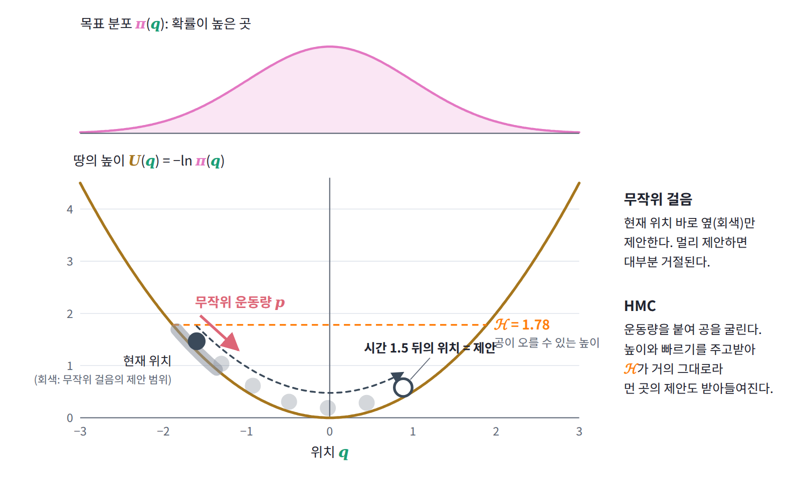
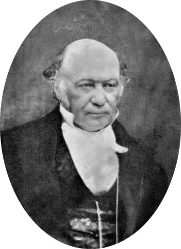
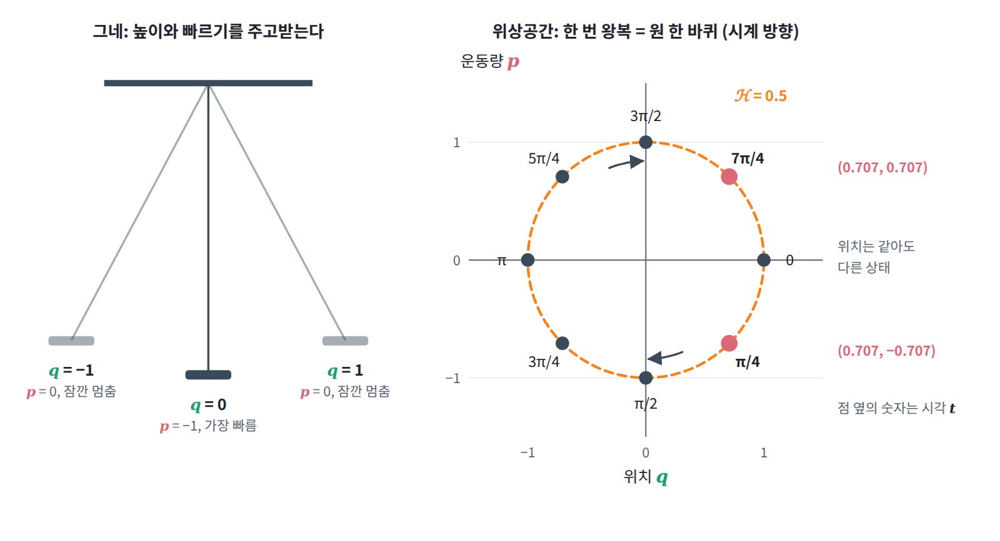
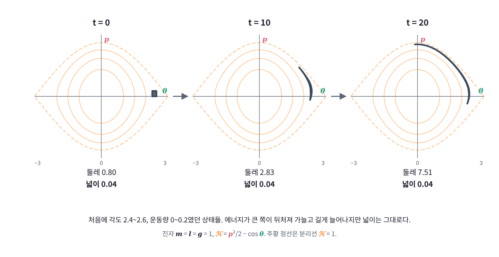
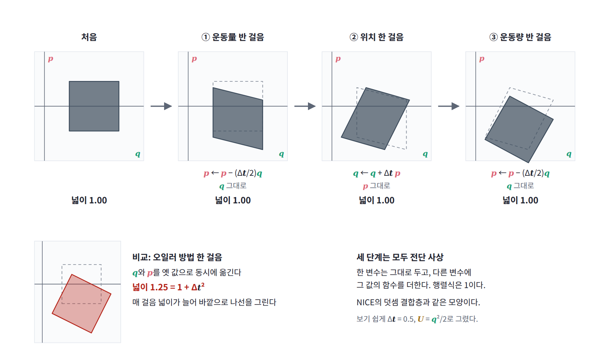

6장 — 해밀토니안과 위상공간
이 장에서 배우는 것
베이즈 신경망의 사후분포처럼 수백 차원에 걸친 분포에서 표본을 뽑아야 한다고 하자. 가장 단순한 방법은 지금 위치 근처의 한 점을 무작위로 제안하고, 그곳의 확률이 더 높으면 받아들이고 낮으면 그 비율만큼의 확률로 받아들이는 무작위 걸음 메트로폴리스 (random-walk Metropolis)다. 그런데 차원이 높으면 조금만 멀리 제안해도 거의 모든 제안이 거절되므로 걸음을 아주 작게 줄일 수밖에 없고, 표본은 오랫동안 제자리 근처를 맴돈다. Stan이나 PyMC 같은 확률 프로그래밍 도구가 기본으로 쓰는 표본 추출기의 뼈대인 해밀토니안 몬테카를로 (Hamiltonian Monte Carlo, HMC)는 이 문제를 뜻밖의 방법으로 푼다. 현재 위치에 무작위 「운동량」을 하나 붙여 주고, 음의 로그 확률을 땅의 높이로 삼아 그 위에서 공을 한참 굴린 뒤, 공이 멈춘 곳이 아니라 정해진 시간 뒤에 공이 있는 곳을 제안한다. 100차원 표준정규분포에서 실제로 돌려 보면, 무작위 걸음은 제안의 24%만 받아들여지는데 한참을 굴러간 HMC의 제안은 98%가 받아들여진다. 멀리 보냈는데 왜 거절되지 않을까? 그리고 공을 굴리는 계산에 왜 leapfrog라는 특별한 적분법을 써야 할까?

비슷한 질문은 다른 곳에서도 나온다. 연속 normalizing flow는 신경망이 정한 속도장을 따라 샘플을 흘려보내는 생성 모델인데, 이때 샘플의 로그밀도가 어떻게 변하는지를 알려 주는 식은 속도장의 야코비 행렬의 대각합 하나로 끝난다. 모멘텀 SGD는 기울기를 속도에 쌓아 가는 두 줄짜리 갱신인데, 모멘텀 계수를 1로 두면 손실의 바닥에 멈추지 못하고 영원히 흔들린다. 이 세 현상을 한꺼번에 설명하는 것이 운동을 위치와 운동량의 평면 위에서 보는 방법, 곧 해밀턴 역학이다.
이 장에서는 그네의 상태를 위치와 운동량의 평면에 점 하나로 찍어 보는 작은 문제에서 출발한다. 그 점이 에너지의 등고선을 따라 돈다는 패턴을 찾은 뒤, 에너지를 위치와 운동량의 함수로 적은 해밀토니안과 운동을 1계 방정식 두 개로 쓰는 해밀턴 방정식을 정의한다. 이어 이 흐름이 여러 상태가 함께 차지하는 넓이를 바꾸지 않는다는 리우빌 정리를 확인하고, 그 결과로 원자의 위치와 속도처럼 연속으로 변하는 상태의 경우의 수를 세는 방법을 얻는다. 이 장을 마치면 HMC의 수락 확률에 왜 야코비안이 없는지, leapfrog가 왜 오일러 방법보다 나은지, 연속 normalizing flow의 로그밀도 식이 무엇을 말하는지, 그리고 모멘텀 최적화와 HMC가 무엇 하나로 갈리는지를 설명할 수 있게 된다.
역사: 광선에서 궤도로, 이름 없는 정리에서 표본 추출기로
이 장의 두 주인공인 해밀토니안과 리우빌 정리에는 각각 한 사람의 이름이 붙어 있지만, 두 개념이 오늘날의 모습을 갖추기까지는 백 년 넘게 여러 사람의 손을 거쳤다. 그 흐름을 연도순으로 정리하면 다음과 같다.
| 연도 | 사람 | 내용 |
|---|---|---|
| 1827~1828 | 해밀턴 | 「광선계 이론」. 렌즈와 거울을 지나는 광선 다발 전체를 함수 하나로 기술 |
| 1834~1835 | 해밀턴 | 「역학의 일반적 방법에 관하여」. 광학의 방법을 역학으로 옮겨, 운동을 위치와 운동량의 1계 방정식으로 씀 |
| 1838 | 리우빌 | 미분방정식의 해에 관한 짧은 순수 수학 논문. 역학 이야기는 한 줄도 없음 |
| 1842 | 야코비 | 리우빌의 결과가 해밀턴 방정식을 따르는 역학계에 그대로 적용된다는 것을 강의에서 지적 |
| 1871~1872 | 볼츠만 | 기체 분자 운동에서 같은 보존 법칙을 독립적으로 유도하고, 분자의 운동 상태를 「위상」(phase)이라 부름 |
| 1902 | 깁스 | 『통계역학의 기본 원리』. 상태를 2n차원 공간의 점으로, 앙상블의 시간 변화를 그 공간의 흐름으로 기술 |
| 1911 | 에렌페스트 부부 | 백과사전 항목에서 지나가듯 쓴 「위상공간」(Phasenraum)이라는 말이 그대로 이름으로 굳음 |
| 1987 | 듀안, 케네디, 펜들턴, 로웨스 | 격자 양자색역학 계산을 위해 분자 동역학과 메트로폴리스를 섞은 「하이브리드 몬테카를로」 |
| 1993~1996 | 닐 | HMC를 통계학으로 가져와 베이즈 신경망 학습에 사용 |
| 2014 | 호프먼, 겔먼 | 궤적의 길이를 자동으로 정하는 NUTS. 이후 Stan의 기본 표본 추출기가 됨 |
1827년, 아직 더블린 트리니티 칼리지의 학부생이던 해밀턴은 천문학 교수로 임명될 만큼 이름난 수재였다. 그런데 그의 첫 대작은 역학이 아니라 광학이었다. 렌즈를 지나는 광선 다발 전체를 하나의 함수로 기술하는 방법을 만든 뒤, 해밀턴은 같은 수학이 행성과 포탄의 운동에도 통한다는 것을 알아챘다. 빛이 가장 빨리 도착하는 길을 고르듯 물체도 작용이 정류하는 길을 고르기 때문이다. 그가 1834년과 1835년에 발표한 두 편의 역학 논문은 이 유비를 끝까지 밀고 나가, 가속도를 다루는 2계 방정식 하나를 위치와 운동량에 관한 1계 방정식 두 개로 바꿔 적었다.

리우빌 정리의 이력은 더 엉켜 있다. 리우빌이 1838년에 쓴 논문은 미분방정식의 해들이 이루는 행렬식에 관한 짧은 수학 노트였고, 역학이나 위상공간이라는 말은 나오지 않는다. 이것이 역학의 정리라는 것을 처음 지적한 사람은 야코비였고, 기체 분자들의 운동에서 같은 결과를 스스로 유도해 통계역학의 기초로 쓴 사람은 볼츠만이었다. 그런데 볼츠만은 1896년의 강의록에서 이 결과를 리우빌의 이름으로 소개했고, 그 뒤로 정리의 이름은 리우빌의 것이 되었다. 「위상공간」이라는 이름도 비슷한 우연으로 생겼다. 에렌페스트 부부는 1911년의 백과사전 항목에서 이 공간을 「Γ-공간」이라고 새로 이름 붙이려 했지만, 독자들의 기억에 남은 것은 그 글에서 지나가듯 쓴 「위상공간」이라는 말이었다고 전해진다.
그로부터 76년 뒤, 이 오래된 역학은 전혀 다른 곳에서 쓸모를 찾았다. 양성자 속 쿼크의 성질을 컴퓨터로 계산하던 물리학자 듀안과 동료들은 분자 동역학처럼 운동방정식을 풀어 먼 곳까지 이동하고, 수치 오차는 메트로폴리스의 수락 단계로 바로잡는 방법을 만들어 「하이브리드 몬테카를로」라고 불렀다. 토론토 대학의 닐은 이 방법을 신경망 가중치의 사후분포에서 표본을 뽑는 데 썼고, 약자는 그대로 두되 이름을 「해밀토니안 몬테카를로」로 바꿔 불렀다. 그 이름이 가리키는 해밀턴 역학의 두 성질, 곧 에너지 보존과 넓이 보존이 이 장이 차례로 살펴볼 내용이다.
작은 문제: 그네의 상태를 점 하나로
그네를 탄 아이를 떠올려 보자. 그네는 가장 높이 올라간 순간에 잠깐 멈추고 가장 낮은 곳을 지날 때 가장 빠르다. 높이에 담긴 위치에너지와 빠르기에 담긴 운동에너지가 서로 주고받는 동안 둘의 합은 변하지 않는다. 그네가 크게 흔들리지 않는 동안에는 가장 낮은 점에서 옆으로 벗어난 거리를 q라 할 때 위치에너지가 q²에 비례하므로, 이 운동은 용수철에 매단 추와 같은 계산이 된다. 운동량을 p = mq̇으로 두고 에너지를 위치와 운동량의 함수로 적으면 다음과 같다.
계산을 간단히 하려고 질량과 각진동수가 모두 1이 되도록 단위를 고르면 에너지는 E = p²/2 + q²/2가 된다. 그네를 q = 1까지 끌어당겼다가 가만히 놓으면 위치는 q = cos t, 운동량은 p = −sin t로 변한다. 한 번 왕복하는 데 걸리는 시간은 2π이고, 그 8분의 1마다 상태를 기록하면 다음 표를 얻는다.
| 시각 t | 위치 q | 운동량 p | 에너지 E |
|---|---|---|---|
| 0 | 1 | 0 | 0.5 |
| π/4 | 0.707 | −0.707 | 0.5 |
| π/2 | 0 | −1 | 0.5 |
| 3π/4 | −0.707 | −0.707 | 0.5 |
| π | −1 | 0 | 0.5 |
| 5π/4 | −0.707 | 0.707 | 0.5 |
| 3π/2 | 0 | 1 | 0.5 |
| 7π/4 | 0.707 | 0.707 | 0.5 |
이제 가로축을 위치 q, 세로축을 운동량 p로 하는 평면을 그리고 표의 여덟 상태를 점으로 찍어 보자. 여덟 점은 모두 반지름 1인 원 위에 있고, 시간이 흐르면 원을 시계 방향으로 한 바퀴 돈다. 그네의 한 번 왕복이 이 평면에서는 원 한 바퀴가 되는 것이다. 위치만 보면 그네가 q = 0.707을 지나는 순간은 한 번 왕복에 두 번 있지만, 운동량까지 함께 보면 둘은 (0.707, −0.707)과 (0.707, 0.707)이라는 다른 점이다. 위치와 운동량을 함께 알면 그네의 상태가 빠짐없이 정해지고, 그다음 움직임도 하나로 정해진다.

그렇다면 거꾸로, 그네의 운동을 풀지 않고 에너지의 식 E(q, p)만 보고도 평면의 각 점에서 상태가 어느 방향으로 얼마나 빨리 움직이는지 알아낼 수 있을까?
패턴: 에너지의 등고선을 따라 도는 흐름
표의 한 줄, 이를테면 t = π/4인 상태 (0.707, −0.707)에서 점이 움직이는 빠르기를 구해 보자. q = cos t와 p = −sin t를 시간으로 미분하면 q̇ = −sin t = −0.707, ṗ = −cos t = −0.707이다. 한편 에너지를 두 변수로 편미분하면 ∂E/∂q = q = 0.707, ∂E/∂p = p = −0.707이다. 네 값을 나란히 놓으면 q̇은 ∂E/∂p와 같고, ṗ는 ∂E/∂q에 마이너스를 붙인 것과 같다. 다른 줄에서 계산해 보아도 마찬가지다.
이 관계는 그네에만 성립하는 우연이 아니다. 에너지는 라그랑지안 L(q, q̇)을 속도에 대해 르장드르 변환한 E = pq̇ − L이고, 변환된 함수를 새 변수로 미분하면 원래 변수가 돌아오므로 ∂E/∂p = q̇은 어떤 계에서나 성립한다. 위치 쪽은 조금 더 계산이 필요하다. 운동량 p를 고정한 채 E를 q로 미분하면, q̇이 q에 따라 바뀌면서 생기는 항들은 p = ∂L/∂q̇ 때문에 서로 지워지고 ∂E/∂q = −∂L/∂q만 남는다. 여기에 운동방정식, 곧 오일러–라그랑주 방정식 d(∂L/∂q̇)/dt = ∂L/∂q를 운동량으로 다시 쓴 ṗ = ∂L/∂q를 합치면 ṗ = −∂E/∂q가 된다. 가속도를 다루던 2계 방정식 하나가 위치와 운동량에 관한 1계 방정식 두 개로 나뉜 것이다.
이 두 식이 그리는 그림을 보자. 에너지의 기울기 벡터 (∂E/∂q, ∂E/∂p)는 에너지가 가장 빨리 커지는 방향을 가리키고, 에너지가 같은 점들을 이은 등고선에 수직이다. 그런데 상태가 움직이는 방향 (q̇, ṗ) = (∂E/∂p, −∂E/∂q)는 이 기울기 벡터의 두 성분을 맞바꾸고 한쪽에 마이너스를 붙인 것, 곧 기울기를 시계 방향으로 90도 돌린 벡터다. 앞의 예에서 기울기 (0.707, −0.707)과 움직임 (−0.707, −0.707)의 내적은 −0.5 + 0.5 = 0이다. 기울기에 수직으로 움직이니 상태는 등고선을 벗어나지 않고, 에너지는 계산할 필요도 없이 보존된다. 식으로 확인하면 dE/dt = (∂E/∂q)q̇ + (∂E/∂p)ṗ = (∂E/∂q)(∂E/∂p) − (∂E/∂p)(∂E/∂q) = 0이다.
ML을 하는 독자에게는 경사하강과 나란히 놓는 것이 가장 알기 쉽다. 경사하강은 기울기의 반대 방향, 곧 등고선을 수직으로 가로질러 내려가고, 이 흐름은 같은 기울기를 90도 돌린 방향, 곧 등고선을 따라 옆으로 간다. 산에 빗대면 경사하강은 가장 가파른 내리막을 골라 골짜기로 내려가는 사람이고, 이 흐름은 같은 높이의 둘레길을 따라 산을 한 바퀴 도는 사람이다. 위치와 운동량의 평면에서 상태는 에너지의 등고선을 따라 흐른다.

정의: 해밀토니안과 해밀턴 방정식
지금까지 본 것에 이름을 붙이자. 계의 위치와 운동량을 모두 좌표로 갖는 공간을 위상공간 (상태 전체를 좌표로 갖는 공간, phase space)이라 한다. 자유도가 n개인 계, 곧 위치 좌표가 n개인 계의 위상공간은 위치 n개와 운동량 n개로 된 2n차원 공간이고, 그 안의 점 하나가 한 순간의 상태 전부를 나타낸다. 그리고 위치와 운동량의 함수로 적은 에너지를 해밀토니안 (위상공간 위의 에너지 함수, Hamiltonian)이라 부르고 ℋ로 쓴다. 라그랑지안을 속도에 대해 르장드르 변환한 것이 곧 해밀토니안이다.
엔트로피를 H로 쓰는 이 책에서는 둘을 구별하려고 해밀토니안을 필기체 ℋ로 쓴다. 운동량 p도 확률의 p와 글자만 같으므로, 이 장에서 확률밀도는 ρ로, 표본을 뽑으려는 목표 분포는 π로 쓴다. ℋ의 값은 에너지와 같지만, 이름을 따로 붙이는 이유는 「위치와 운동량의 함수로 적혀 있다」는 사실이 미분의 뜻을 정하기 때문이다. 이 약속 아래에서 앞 절의 패턴은 다음 식이 되고, 이를 해밀턴 방정식 (Hamilton’s equations)이라 한다.
해밀토니안이 시간에 직접 의존하지 않으면, 앞 절의 계산이 그대로 되풀이되어 ℋ는 운동하는 동안 변하지 않는다. 에너지 보존이 따로 증명할 정리가 아니라 방정식의 모양에서 저절로 나오는 성질이 된 것이다.
진자로 확인해 보자. 길이 l인 끈에 매달린 질량 m의 진자는 각도 θ와 그 운동량 p = ml²θ̇으로 ℋ = p²/(2ml²) − mgl cos θ라 쓸 수 있다. 해밀턴 방정식은 θ̇ = p/(ml²), ṗ = −mgl sin θ이고, 첫 식을 미분해 둘째 식에 넣으면 익숙한 운동방정식 ml²θ̈ = −mgl sin θ가 돌아온다. 새로 얻은 것은 그림이다. m = l = g = 1로 두면 ℋ = p²/2 − cos θ이고, 위상공간의 등고선은 두 종류로 나뉜다. ℋ < 1인 등고선은 원점을 감싸는 닫힌 고리로 진자가 앞뒤로 흔들리는 운동이고, ℋ > 1인 등고선은 θ 방향으로 끝없이 이어지는 물결선으로 진자가 꼭대기를 넘어 빙글빙글 도는 운동이다. 가장 낮은 곳에서 운동량 1.9로 밀면 ℋ = 0.805라서 되돌아오고, 2.1로 밀면 ℋ = 1.205라서 꼭대기를 넘는다. 두 종류를 가르는 ℋ = 1의 등고선을 분리선 (두 운동을 가르는 경계, separatrix)이라 한다. 운동방정식을 한 번도 풀지 않고 에너지의 등고선만 그려서 운동의 종류를 모두 알아낸 셈이다.

일반화: 위상공간의 넓이는 변하지 않는다
상태 여럿을 함께 흘려 보면
지금까지는 상태 하나가 움직이는 모습을 보았다. 이번에는 조금씩 다른 상태 여럿을 한꺼번에 흘려 보자. 진자(m = l = g = 1)의 위상공간에서 각도가 2.4에서 2.6 사이, 운동량이 0에서 0.2 사이인 작은 정사각형 안에 있는 상태들을 모두 출발시키면, 정사각형은 흐름을 따라 움직이면서 모양이 바뀐다. 진자는 크게 흔들릴수록 한 번 왕복하는 데 시간이 더 걸리므로, 정사각형 안에서 에너지가 큰 쪽의 상태들은 작은 쪽보다 뒤처지고 정사각형은 점점 가늘고 길게 늘어난다. 수치 적분으로 경계를 따라가 보면 둘레는 처음 0.8에서 시간 10이 지나면 2.83, 시간 20이 지나면 7.51로 아홉 배 넘게 늘어난다. 그런데 넓이는 세 시각 모두 소수 다섯째 자리까지 0.04 그대로다. 반죽을 밀대로 밀면 모양은 얇고 넓게 바뀌어도 부피는 그대로인 것과 같다.

이것이 우연이 아니라는 것은 한 줄로 보일 수 있다. 평면 위의 흐름에서 작은 영역의 넓이가 늘어나는 빠르기는 속도장의 발산 (한 점에서 흐름이 퍼져 나가는 정도, divergence), 곧 각 속도 성분을 자기 좌표로 미분한 값들의 합이 정한다. 해밀턴 방정식의 속도장에서 이 값을 계산하면 두 항이 정확히 지워진다.
발산이 어디서나 0이니 어떤 영역도 늘거나 줄지 않는다. 자유도가 n개이면 i마다 같은 계산을 해서 더하면 되므로, 2n차원 위상공간의 부피도 마찬가지다. 이 사실을 리우빌 정리 (해밀턴 흐름은 위상공간의 부피를 보존한다, Liouville’s theorem)라 한다.
반대로 넓이가 줄어드는 경우와 비교하면 이 정리의 무게를 알 수 있다. 진자에 공기 저항처럼 운동량에 비례하는 마찰을 넣어 ṗ = −sin θ − γp로 바꾸면, 발산은 −γ가 되어 넓이가 e^(−γt)의 빠르기로 줄어든다. γ = 0.2로 같은 정사각형을 흘려 보면 넓이는 시간 2에서 0.0268, 시간 5에서 0.0147로, 0.04 × e^(−0.2t)와 소수 여섯째 자리까지 일치한다. 마찰이 있으면 모든 상태가 결국 가장 낮은 점 하나로 모여들고, 마찰이 없으면 어떤 상태도 한곳으로 모이지 않는다.
밀도는 흐름을 따라 그대로 실려 간다
이제 상태들이 위상공간에 확률밀도 ρ(q, p)로 퍼져 있다고 하자. 작은 영역 하나를 흐름을 따라가며 지켜보면, 그 안에 든 상태들은 영역 밖으로 빠져나가지 않으므로 확률은 그대로이고, 리우빌 정리 때문에 넓이도 그대로다. 확률을 넓이로 나눈 값이 밀도이므로, 흐름을 따라가는 관찰자가 보는 밀도는 변하지 않는다. 한 자리에 서서 보는 밀도의 변화로 옮겨 적으면 다음과 같고, 이를 리우빌 방정식이라 한다.
왼쪽의 세 항을 합한 것은 흐름을 따라 움직이며 잰 밀도의 변화율이므로, 이 식은 「흐름을 따라가면 밀도가 변하지 않는다」는 말을 그대로 옮긴 것이다. 여기서 쓸모 있는 결론이 하나 나온다. 밀도가 에너지만의 함수, 이를테면 ρ ∝ e^(−ℋ)이면 이 밀도는 시간이 지나도 변하지 않는다. 각 상태는 자기 등고선을 벗어나지 않고, 같은 등고선 위의 밀도는 어디서나 같기 때문이다. 해밀턴 흐름은 이런 분포를 흔들지 않고 그 안에서 상태들만 옮겨 놓는다.
연속 상태의 경우의 수 세기
동전처럼 상태가 셀 수 있게 나뉘어 있으면 경우의 수는 상태를 하나씩 세면 된다. 하지만 원자의 위치와 운동량처럼 연속으로 변하는 양에서는 「몇 개」를 셀 수 없으므로 부피로 대신해야 하는데, 문제는 무엇의 부피를 재느냐다. 모든 미시상태를 똑같이 대접한다는 등확률 가정이 의미를 가지려면, 오늘 같은 부피를 차지하던 상태들의 모임이 내일도 같은 부피를 차지해야 한다. 리우빌 정리가 바로 그것을 보장하므로, 연속 상태를 세는 자연스러운 방법은 위상공간의 부피를 재는 것이다. 부피를 개수로 바꾸려면 칸 하나의 크기를 정해야 하는데, 양자역학은 자유도 하나당 플랑크 상수만큼의 넓이를 칸 하나로 정해 준다. 다만 칸의 크기는 경우의 수에 상수를 곱할 뿐이라 로그를 취해 미분하는 온도 계산에는 영향을 주지 않는다.
간단한 예로 그네 N개가 모인 계를 세어 보자. 그네 하나에서 에너지가 E 이하인 상태들은 위상공간에서 타원 p²/(2m) + mω²q²/2 ≤ E의 안쪽이고, 두 반지름이 √(2mE)와 √(2E/(mω²))이므로 넓이는 2πE/ω다. 그네 N개의 위상공간은 2N차원이고 에너지가 E 이하인 영역은 2N차원 타원체이므로, 그 부피는 E^N에 비례한다. 경우의 수의 로그에 볼츠만 상수를 곱한 것이 엔트로피이므로 다음을 얻는다.
곧 E = NkT이고, 온도가 T인 그네 하나는 평균적으로 kT만큼의 에너지를 갖는다. 상태가 나뉘어 있는 계에서 쓰는 「경우의 수를 세고, 로그를 취하고, 에너지로 미분한다」는 순서가 연속 상태에서도 그대로 통한다. 달라진 것은 세는 대상이 위상공간의 부피라는 점 하나다.
보기: 코드
오일러 방법과 leapfrog
해밀턴 방정식을 컴퓨터로 풀려면 시간을 Δt 간격으로 잘라야 한다. 가장 먼저 떠오르는 방법은 지금의 속도로 위치와 운동량을 한꺼번에 옮기는 오일러 방법 (Euler method)이다. 다른 방법은 운동량을 반 걸음 옮기고, 새 운동량으로 위치를 한 걸음 옮긴 뒤, 새 위치에서 운동량을 다시 반 걸음 옮기는 leapfrog 방법 (개구리가 번갈아 뛰어넘듯 위치와 운동량을 엇갈려 갱신하는 적분법)이다. 두 방법으로 그네(E = p²/2 + q²/2)를 Δt = 0.1로 적분하고, 에너지와 한 걸음이 넓이를 몇 배로 바꾸는지 비교해 보자.
import numpy as np
def grad_U(q): # U(q) = q²/2 (그네, m = ω = 1)
return q
def euler(q, p, dt): # 위치와 운동량을 동시에 옛 값으로 갱신
return q + dt * p, p - dt * grad_U(q)
def leapfrog(q, p, dt): # 반 걸음 차기 → 한 걸음 이동 → 반 걸음 차기
p = p - 0.5 * dt * grad_U(q)
q = q + dt * p
p = p - 0.5 * dt * grad_U(q)
return q, p
H = lambda q, p: 0.5 * p**2 + 0.5 * q**2
dt = 0.1
for step in (euler, leapfrog):
q, p = 1.0, 0.0
for n in range(1, 1001):
q, p = step(q, p, dt)
if n in (100, 1000):
print(step.__name__, n, round(H(q, p), 4))
# 한 걸음 사상의 야코비 행렬식 (넓이 배율), 수치 미분으로
e = 1e-6
J = np.array([np.subtract(step(1 + e, 0.3, dt), step(1, 0.3, dt)),
np.subtract(step(1, 0.3 + e, dt), step(1, 0.3, dt))]).T / e
print(step.__name__, "det J =", round(np.linalg.det(J), 6))
# euler 100 1.3524
# euler 1000 10479.5778
# euler det J = 1.01
# leapfrog 100 0.4996
# leapfrog 1000 0.4997
# leapfrog det J = 1.0
처음 에너지는 0.5인데, 오일러 방법으로는 100걸음 뒤에 1.3524, 1000걸음 뒤에는 10479.58이 되어 그네가 하늘 끝까지 날아간다. 이유는 행렬식에 있다. 이 그네에서 오일러 방법의 한 걸음은 (q, p)에 행렬 [[1, Δt], [−Δt, 1]]을 곱하는 것이고, 그 행렬식은 1 + Δt² = 1.01이다. 한 걸음마다 넓이가 1% 늘어나니 상태는 원을 따라 돌지 못하고 바깥으로 나선을 그리며, 에너지도 정확히 매 걸음 1.01배가 되어 0.5 × 1.01^100 = 1.3524가 된다. 반면 leapfrog의 행렬식은 정확히 1이다. 세 단계가 각각 운동량만 바꾸거나 위치만 바꾸는 전단 사상 (한 변수를 다른 변수의 함수만큼 밀어 주는 변환, shear map)이고, 전단 사상의 야코비 행렬은 대각선이 모두 1인 삼각행렬이라 행렬식이 1이기 때문이다. 에너지는 0.5에서 조금씩 흔들리지만 10만 걸음을 가도 0.49875와 0.5 사이를 벗어나지 않는다. 사실 이 그네에서 leapfrog는 조금 변형된 에너지 p²/(2(1 − Δt²/4)) + q²/2를 정확히 보존하므로 진짜 에너지도 멀리 벗어날 수 없다.
HMC를 몇 줄로
같은 leapfrog로 HMC를 짜 보자. 목표 분포는 100차원 표준정규분포이고, 위치에너지는 음의 로그 확률 U(q) = ‖q‖²/2다. 한 번의 갱신은 운동량을 새로 뽑고, leapfrog로 열 걸음 굴리고, 에너지가 변한 만큼만 확률적으로 거절하는 세 단계다. 비교를 위해 무작위 걸음 메트로폴리스도 차원에 맞춘 걸음 크기 0.24로 돌린다.
import numpy as np
rng = np.random.default_rng(0)
d = 100
U = lambda q: 0.5 * q @ q # 목표 분포 π(q) ∝ e^(-U), 100차원 표준정규분포
grad_U = lambda q: q
def hmc_step(q, eps=0.15, L=10):
p = rng.standard_normal(d) # 운동량을 새로 뽑는다
H0 = U(q) + 0.5 * p @ p
qn, pn = q.copy(), p.copy()
for _ in range(L): # leapfrog L걸음
pn -= 0.5 * eps * grad_U(qn)
qn += eps * pn
pn -= 0.5 * eps * grad_U(qn)
H1 = U(qn) + 0.5 * pn @ pn
if rng.random() < np.exp(H0 - H1): # 수락 확률 min(1, e^(-ΔH))
return qn, True
return q, False
def rwm_step(q, s=0.24): # 비교: 무작위 걸음 메트로폴리스
qn = q + s * rng.standard_normal(d)
if rng.random() < np.exp(U(q) - U(qn)):
return qn, True
return q, False
for name, step in (("HMC", hmc_step), ("RWM", rwm_step)):
q, acc, xs = np.zeros(d), 0, []
for t in range(5000):
q, a = step(q)
acc += a
xs.append(q[0])
xs = np.array(xs[1000:])
r1 = np.corrcoef(xs[:-1], xs[1:])[0, 1] # 이웃한 표본끼리의 상관
print(name, "수락률", acc / 5000, "지연 1 자기상관", round(r1, 3))
# HMC 수락률 0.981 지연 1 자기상관 0.093
# RWM 수락률 0.2376 지연 1 자기상관 0.99
HMC는 한 번에 시간 1.5만큼, 곧 진동 주기의 4분의 1 가까이를 굴러가는데도 제안의 98%가 받아들여지고, 이웃한 두 표본의 상관은 0.093으로 거의 독립이다. 무작위 걸음은 24%만 받아들여지고 이웃한 표본의 상관이 0.99라서 사실상 같은 자리에 머문다. HMC는 한 번 갱신할 때 기울기를 열 번 계산하므로 공정하게 비교하려면 무작위 걸음에 열 걸음을 주어야 하지만, 무작위 걸음 표본은 열 걸음 떨어져도 상관이 0.94로 여전히 높다. 코드의 수락 단계에 야코비 행렬식이 나오지 않는다는 점도 눈여겨보자. 바로 앞에서 확인한 leapfrog의 행렬식 1이 여기서 쓰인다.
ML에서 만나는 곳
해밀턴 역학은 ML의 네 곳에 남아 있다. 표본 추출의 HMC, 생성 모델의 연속 normalizing flow, 물리계를 배우는 Hamiltonian Neural Networks, 그리고 최적화의 모멘텀 방법이다.
HMC: 확률을 위치에너지로 (움직이는 것: 인위적 물리계)
HMC가 하는 일은 표본을 뽑고 싶은 분포 π(q)를 물리계로 번역하는 것이다. 음의 로그 확률을 위치에너지로 삼고, 실제로는 없던 운동량 p를 표준정규분포에서 뽑아 붙이면, 위치와 운동량의 결합 분포가 e^(−ℋ)에 비례하는 위상공간 분포가 된다.
이 장에서 본 성질들이 각 단계의 근거가 된다. 결합 분포 e^(−ℋ)는 에너지만의 함수이므로 정확한 해밀턴 흐름은 이 분포를 바꾸지 않는다. 흐름이 에너지를 보존하므로 Δℋ는 거의 0이고 수락 확률은 거의 1이다. 그리고 흐름이 부피를 보존하므로, 제안의 확률을 계산할 때 붙어야 할 야코비 행렬식이 1이 되어 수락 확률에 나타나지 않는다. leapfrog는 이 가운데 부피 보존과 되돌릴 수 있는 성질(운동량의 부호를 뒤집으면 같은 길을 거슬러 온다)을 정확히 지키고 에너지 보존만 근사로 지키는데, 남은 에너지 오차는 메트로폴리스 수락 단계가 정확히 바로잡는다. 그래서 이산화를 했는데도 HMC가 도는 마르코프 연쇄의 정상 분포는 정확히 π다.
flowchart LR
A["현재 위치 q"] --> B["운동량 p 새로 뽑기<br/>표준정규분포에서"]
B --> C["leapfrog로 L걸음 굴리기<br/>부피 보존 · 되돌릴 수 있음"]
C --> D["수락 확률 min(1, e^−Δℋ)<br/>에너지가 거의 보존되어 ≈ 1"]
D -->|수락| E["새 위치 q′"]
D -->|거절| F["q에 그대로 머묾"]
HMC 한 번의 갱신과 각 단계를 떠받치는 성질. 운동량 뽑기는 에너지를 바꾸고, leapfrog는 에너지 등고선을 따라 멀리 옮기며, 수락 단계는 남은 에너지 오차만 바로잡는다.
닐(Neal, 2011)의 HMC 해설은 초록에서 이렇게 말한다. 「해밀턴 동역학이 쓸모 있는 열쇠는 부피를 보존한다는 것이다. 그래서 그 궤적으로 복잡한 사상을 만들어도 계산하기 어려운 야코비안 인자를 따질 필요가 없고, 이 성질은 시간을 잘게 나눠 동역학을 근사할 때도 정확히 유지할 수 있다.」 이 장을 마친 독자는 이 문장을 「리우빌 정리 덕분에 행렬식이 1이고, leapfrog는 행렬식이 1인 전단 사상의 합성이라 이산화해도 1이다」로 읽게 된다. 같은 글에서 닐은 차원 d가 커질 때 독립 표본 하나를 얻는 비용이 무작위 걸음은 d²에 비례해 늘지만 HMC는 d^(5/4)에 비례해 늘 뿐이라는 것도 보였다. leapfrog에서는 에너지 오차의 평균이 걸음 크기의 네제곱에 비례해 작아지기 때문이다.
연속 normalizing flow의 로그밀도 식 (움직이는 것: 분포)
연속 normalizing flow는 표준정규분포에서 뽑은 샘플을 신경망이 정한 속도장 dx/dt = f(x, t)를 따라 흘려보내 데이터 분포로 옮기는 생성 모델이다. 학습하려면 샘플의 로그밀도가 흐름을 따라 어떻게 변하는지 알아야 하는데, Chen 외(2018)의 Neural ODE 논문은 이를 「순간 변수 변환」 정리로 적었다.
이 식은 리우빌 방정식을 이끌어 낸 논리와 같다. 흐름을 따라가는 작은 영역의 확률은 그대로이고 넓이는 발산의 빠르기로 늘어나므로, 밀도의 로그는 발산만큼 줄어든다. 해밀턴 흐름에서는 발산이 0이라 밀도가 변하지 않았던 것이고, 신경망 속도장은 발산이 0이 아니어서 분포의 모양을 바꿀 수 있는 것이다. 층을 쌓는 이산 flow는 층마다 야코비 행렬식의 로그를 더해야 하지만, 연속 flow는 그보다 훨씬 싼 대각합 하나만 적분하면 된다. Grathwohl 외(2019)의 FFJORD는 이 대각합마저 무작위 벡터로 추정해 계산을 고차원까지 늘렸다.
반대 방향의 연결도 있다. 이산 flow의 초기 모델인 NICE(Dinh 외, 2014)의 덧셈 결합층은 입력을 두 부분으로 나눠 한쪽을 그대로 두고 다른 쪽에 신경망 출력을 더하므로, 야코비 행렬식이 1인 부피 보존 변환이다. 이것은 leapfrog의 반 걸음, 곧 위치는 그대로 두고 운동량에 −(Δt/2)∇U(q)를 더하는 전단 사상과 같은 모양이다. leapfrog 한 걸음은 신경망 대신 정해진 함수(위치에너지의 기울기와 운동량)를 쓴 결합층 세 개를 쌓은 것이라고 볼 수 있다.

Hamiltonian Neural Networks (움직이는 것: 에너지 함수를 표현하는 매개변수)
진자나 행성의 관측 데이터로 운동을 예측하는 신경망을 학습한다고 하자. 흔한 방법은 상태 (q, p)를 넣고 변화율 (q̇, ṗ)를 직접 출력하게 하는 것인데, 이렇게 배운 속도장은 발산이 0이라는 보장이 없어서 긴 시간을 굴리면 에너지가 조금씩 새거나 불어난다. Greydanus, Dzamba, Yosinski(2019)의 Hamiltonian Neural Networks는 신경망이 스칼라 하나 ℋ_θ(q, p)만 출력하게 하고, 자동미분으로 ∂ℋ_θ/∂p와 −∂ℋ_θ/∂q를 계산해 관측된 변화율과 맞추도록 학습한다. 속도장이 해밀턴 방정식의 모양으로 만들어지므로 학습이 불완전해도 적분 오차를 빼면 배운 에너지 ℋ_θ는 정확히 보존되고 위상공간의 부피도 보존된다. 대신 HNN은 운동량을 관측할 수 있어야 하는데, 속도만 관측될 때를 위해 라그랑지안을 배우는 Lagrangian Neural Networks가 뒤따라 나왔다.
모멘텀 최적화: 마찰이 있는 해밀턴 계 (움직이는 것: 매개변수)
폴랴크(Polyak, 1964)의 heavy-ball 방법, 곧 우리가 모멘텀 SGD라 부르는 갱신은 손실을 위치에너지 U(θ)로 보면 운동량이 있는 공의 운동이다.
이 갱신 한 번이 위상공간 (θ, p)의 부피를 몇 배로 바꾸는지 계산하면, 손실의 모양이나 학습률과 상관없이 매개변수 한 차원마다 정확히 μ배다. μ = 0.9이면 한 걸음에 넓이가 0.9배, 50걸음이면 0.9^50 ≈ 0.0052배로 줄어든다. 위상공간의 넓은 영역에서 출발한 상태들이 점 하나, 곧 손실의 바닥에서 멈춘 상태로 모여드는 것이 최적화의 수렴이고, 그것을 가능하게 하는 것이 마찰이다. μ = 1이면 이 갱신은 운동량을 먼저 바꾸고 새 운동량으로 위치를 옮기는 해밀턴 방정식의 적분법이 되어 부피를 정확히 보존하므로, 매개변수는 바닥에 멈추지 못하고 끝없이 흔들린다. HMC와 모멘텀 최적화는 같은 기계인데, HMC는 마찰 없이 운동량을 다시 뽑아 분포 전체를 돌아다니고 최적화는 마찰로 운동량을 깎아 한 점에 멈춘다.
대화 연습
선생님의 수업. 김민준(학부 3학년, ML 강의 몇 개 수강)과 이서연(수학과 3학년)이 문제를 풀고, 선생님이 틀린 곳을 짚는다.
문제 1. 부호 하나
질량 1인 추가 용수철에 매달려 있고 해밀토니안이 ℋ = p²/2 + 2q²이다. 해밀턴 방정식을 쓰고, q = 1, p = 0에서 출발한 상태가 위상공간에서 그리는 모양과 한 바퀴 도는 데 걸리는 시간을 구하라.

김민준∂ℋ/∂p = p니까 q̇ = p, ∂ℋ/∂q = 4q니까 ṗ = 4q. 둘을 합치면 q̈ = 4q고, 풀면 q = cosh 2t예요. 모양은… t = 1이면 q가 3.76, t = 2면 27.3이요. 계속 커지는데요? 용수철이 추를 우주로 날려 보내네요.

이서연민준아, 마이너스 빼먹었어. ṗ = −∂ℋ/∂q잖아. ṗ = −4q니까 q̈ = −4q, q = cos 2t, p = −2 sin 2t. 가로 반지름 1, 세로 반지름 2인 타원이고, 한 바퀴는 π초야.

선생님서연 학생 답이 맞아요. 민준 학생, 틀린 답이라도 스스로 알아챌 방법이 있었어요. 민준 학생의 해에서 t = 1일 때 ℋ를 계산해 볼래요?

김민준p = 2 sinh 2 ≈ 7.25니까 ℋ = 26.3 + 28.3 = 54.6이요. 처음엔 2였는데… 에너지가 스물일곱 배가 됐네요. 보존돼야 하는 건데.
선생님그게 검산이에요. 부호가 맞으면 속도는 에너지 기울기를 90도 돌린 방향이라 등고선을 따라 돌아요. 부호를 틀리면 그 방향이 등고선을 따라가지 않고 가로지르게 돼서, 이 해밀토니안에서는 에너지가 커지는 쪽으로 끌려 나가요.

이서연등고선 ℋ = 2가 바로 제가 구한 타원이네요. q = 1, p = 0에서 ℋ = 2니까 출발점이 이미 그 타원 위에 있어요. 방정식을 풀지 않아도 모양은 나오는 거고요.

김민준그럼 앞으로 해밀턴 방정식 풀고 나면 ℋ부터 다시 넣어 볼게요. 코드에 assert 거는 것처럼요.
문제 2. 오일러 방법의 에너지
ℋ = p²/2 + q²/2인 그네를 q = 1, p = 0에서 출발시켜 오일러 방법(q ← q + Δt·p, p ← p − Δt·q를 동시에)으로 Δt = 0.1, 100걸음 적분했더니 에너지가 1.3524가 되었다. 원인을 찾고 고쳐라.
김민준걸음이 너무 커서 그래요. Δt = 0.01로 줄여서 같은 시간 10까지 1000걸음 돌렸더니 0.5526이에요. 훨씬 낫죠. 더 줄이면 0.5에 붙을 거예요.

이서연한 걸음마다 에너지가 정확히 1 + Δt²배가 되니까, 시간 t까지 가면 (1 + Δt²)^(t/Δt), 대략 e^(Δt·t)배야. Δt = 0.01이면 시간 10에서는 e^0.1 ≈ 1.105배라 괜찮아 보이는데, 시간 1000까지 가면 e^10배야.

김민준돌려 볼게요… 10만 걸음 뒤에 11007.7이요. 어, 그네가 또 날아갔어요.

선생님걸음을 줄이면 날아가는 시점을 늦출 뿐 막지는 못해요. HMC나 분자 시뮬레이션처럼 오래 굴려야 하는 곳에서는 치명적이죠. 민준 학생, 코드에서 한 줄만 바꿔 볼까요? 운동량을 먼저 갱신하고, 위치는 새 운동량으로 옮기는 거예요.

김민준p ← p − Δt·q를 먼저 하고 q ← q + Δt·p를 새 p로… Δt = 0.1로 10만 걸음 돌렸는데 에너지가 0.476과 0.526 사이에서만 왔다 갔다 해요. 한 줄 순서만 바꿨는데요?

이서연민준아, 행렬식을 봐. 운동량만 바꾸는 단계는 [[1, 0], [−Δt, 1]], 위치만 바꾸는 단계는 [[1, Δt], [0, 1]]이라 둘 다 행렬식이 1이야. 동시에 갱신한 원래 방법은 [[1, Δt], [−Δt, 1]]이라 1 + Δt²이었고.

선생님그래요. 넓이가 매 걸음 1%씩 늘면 상태는 나선을 그리며 바깥으로 나갈 수밖에 없어요. 넓이를 정확히 지키는 적분법을 심플렉틱 적분법 (위상공간의 넓이 구조를 보존하는 적분법, symplectic integrator)이라 부르고, 방금 민준 학생이 만든 것과 leapfrog가 대표적이에요.

이서연그런데 넓이를 지킨다고 에너지까지 지키는 건 아니잖아요. 0.476에서 0.526까지 흔들리는 걸 보면요.
선생님맞아요. 넓이 보존과 에너지 보존은 다른 성질이에요. 다만 심플렉틱 적분법은 원래 에너지와 조금 다른 「변형된 에너지」를 거의 정확히 보존해서, 진짜 에너지가 한쪽으로 흘러가지 않고 그 근처에서 흔들리기만 해요. 그리고 leapfrog는 앞뒤가 대칭이라 흔들리는 폭도 훨씬 작아요. 같은 Δt에서 0.49875에서 0.5 사이였죠.

김민준과제에서 시뮬레이션이 터지면 늘 학습률 줄이듯이 Δt부터 줄였는데, 적분법 자체를 바꿔야 하는 경우가 있네요.
문제 3. 이상기체의 경우의 수
부피 V인 상자에 질량 m인 원자 N개가 들어 있고, 원자끼리는 힘을 주고받지 않아 에너지는 운동에너지의 합 E = Σ‖pᵢ‖²/(2m)뿐이다. 에너지가 E 이하인 상태들의 위상공간 부피로 경우의 수 W(E, V)를 세고, 엔트로피 S = k ln W에서 온도와 압력을 구하라.

이서연원자 하나는 상자 안 어디에나 있을 수 있으니까 위치의 부피가 V예요. 원자가 N개면 V^N이고, S = Nk ln V. 부피로 미분하면 P/T = Nk/V, PV = NkT가 바로 나와요. 쉽네요.

선생님압력은 맞았어요. 그럼 온도는요?

이서연1/T = ∂S/∂E인데… S에 E가 없어요. 0이면 1/T = 0이고, 온도가 무한대예요. 어떤 기체든 온도가 무한대일 리는 없는데.

김민준서연아, 너 위상공간이 아니라 위치 공간만 셌어. 운동량 축을 통째로 빼먹었잖아.
이서연아… 에너지가 들어 있는 건 운동량 쪽인데 그쪽을 안 셌네. 위치만 세면 에너지가 얼마든 경우의 수가 같으니까 온도가 정의될 수가 없었던 거고.
선생님그게 이 문제의 함정이에요. 민준 학생, 운동량 쪽을 세 볼래요?
김민준원자 N개의 운동량은 3N개의 숫자고, Σ‖pᵢ‖² ≤ 2mE는 3N차원 공간에서 반지름 √(2mE)인 공이에요. 공의 부피는 반지름의 3N제곱에 비례하니까 (2mE)^(3N/2)에 비례하고요. 그럼 W ∝ V^N E^(3N/2)예요.

이서연잠깐, 에너지가 「E 이하」가 아니라 「정확히 E」인 상태만 세야 하는 거 아니야? 그러면 공이 아니라 얇은 껍질이잖아.
김민준그거 가우시안 껍질 할 때 봤던 거잖아. 차원이 높으면 공의 부피가 거의 다 껍질에 몰려 있다며. 3N이 300만 돼도 바깥 1% 두께 껍질에 부피의 95%가 들어 있어.

선생님그래서 원자가 많으면 공으로 세든 껍질로 세든 ln W의 차이는 N에 비해 무시할 만큼 작아요. 이제 엔트로피를 써 봐요.

이서연S = Nk ln V + (3N/2)k ln E + (상수). 에너지로 미분하면 1/T = 3Nk/(2E)니까 E = (3/2)NkT, 원자 하나에 (3/2)kT예요. 이거, 온도를 처음 정의할 때 결과만 빌려 썼던 이상기체 엔트로피랑 똑같은 식이네요. 드디어 어디서 왔는지 알았어요.


김민준근데 그네 하나는 kT였는데 원자 하나는 (3/2)kT네요. 그네는 제곱 항이 p²하고 q² 두 개, 원자는 운동량 성분의 제곱 항이 세 개… 제곱 항 하나에 ½kT씩인가요?
선생님좋은 추측이에요. 그 추측이 언제 맞는지는 숙제로 남겨 둘게요.
이서연하나 더 궁금해요. 왜 속도가 아니라 운동량으로 세야 하죠? 여기서는 p = mv라서 m^(3N)이라는 상수만 다르고, 상수는 미분하면 사라지잖아요.

선생님직교좌표에서는 그래요. 이번엔 평면 위를 힘 없이 날아가는 입자 하나를 극좌표 (r, θ)로 적어 봐요. 각도 쪽 운동량은 얼마죠?
이서연라그랑지안이 ½m(ṙ² + r²θ̇²)이니까 θ̇으로 미분하면 p_θ = mr²θ̇이에요. 그럼 dp_r dp_θ = m²r² dṙ dθ̇… 아, r²이 붙어요. 속도로 잰 부피는 운동량으로 잰 부피를 m²r²으로 나눈 거라서, 입자가 멀어져 r이 두 배가 되면 속도로 잰 부피는 4분의 1로 줄어요.
선생님운동량으로 잰 부피는 리우빌 정리로 그대로인데, 속도로 잰 부피는 좌표에 따라 늘고 줄어요. 속도로 세면 같은 상태들의 모임이 시간이 지나면서 「경우의 수가 바뀌는」 셈이라 등확률 가정을 세울 수 없어요. 운동량이 경우의 수를 세는 올바른 축인 이유가 그거예요.
이서연해석학에서 변수를 바꾸면 적분에 야코비안이 붙는 거랑 같네요. 운동량은 야코비안이 시간이 지나도 1로 유지되는 좌표고요.
문제 4. HMC의 수락 확률
목표 분포가 1차원 표준정규분포(U(q) = q²/2)이다. 현재 위치 q = 1에서 운동량 p = 0.5를 뽑고, 걸음 크기 0.5로 leapfrog를 한 걸음 가서 (q′, p′)를 얻었다. 이 제안의 수락 확률을 구하라.
김민준leapfrog부터요. p = 0.5 − 0.25 × 1 = 0.25, q′ = 1 + 0.5 × 0.25 = 1.125, p′ = 0.25 − 0.25 × 1.125 = −0.03125. 수락 확률은 메트로폴리스니까 π(q′)/π(q) = e^(−(1.125² − 1)/2) = e^(−0.133) ≈ 0.876. 87.6%요.
선생님계산은 맞는데, 그건 무작위 걸음 메트로폴리스의 공식이에요. HMC가 표본을 뽑는 분포는 무엇이었죠?
김민준π(q)… 아니, 운동량까지 붙인 결합 분포 e^(−ℋ)요. 운동량도 같이 따져야 하는 거네요.

이서연ℋ = q²/2 + p²/2로 계산하면 처음엔 0.5 + 0.125 = 0.625, 도착하면 0.6328 + 0.0005 = 0.6333이에요. Δℋ = 0.0083이니까 수락 확률은 e^(−0.0083) ≈ 0.992, 99.2%예요.
김민준위치만 보면 확률이 낮은 쪽으로 올라갔는데, 운동에너지를 써서 올라간 거라 에너지 합은 거의 그대로네요. 언덕을 뛰어 올라가다 속도가 줄어든 공이요.
이서연그런데 원래 메트로폴리스–헤이스팅스에서는 제안 분포의 비율도 곱해야 하잖아요. 여기서는 그게 왜 없어요?
선생님두 가지 덕분이에요. leapfrog 끝에서 운동량의 부호를 뒤집으면, 도착점에서 같은 걸음으로 출발했을 때 정확히 원래 자리로 돌아와요. 그래서 가는 제안과 오는 제안이 짝을 이뤄요. 그리고 이 사상의 행렬식이 1이라 밀도를 옮길 때 붙는 야코비안 인수도 1이에요. 둘 다 1이라서 식에서 사라진 거예요.
김민준그럼 leapfrog 대신 오일러 방법으로 굴리면요?
선생님행렬식이 1이 아니라서(이 문제에서는 1 + 0.5² = 1.25) 그 인수를 따로 곱해야 하고, 부호를 뒤집어 거꾸로 돌려도 제자리로 오지 않아서 짝이 맞지 않아요. min(1, e^(−Δℋ))를 그대로 쓰면 틀린 분포에서 표본을 뽑게 돼요. HMC가 leapfrog를 고집하는 이유예요.
문제 5. 모멘텀 SGD의 위상공간
손실 U(θ) = θ²/2를 모멘텀 SGD(p ← μp − η∇U(θ), θ ← θ + p)로 최소화한다. 학습률 η = 0.1, 모멘텀 계수 μ = 0.9일 때 한 번의 갱신이 (θ, p) 평면의 넓이를 몇 배로 바꾸는지 구하고, μ = 1이면 어떻게 되는지 말하라.
김민준모멘텀 SGD는 공을 굴리는 거니까 해밀턴 계잖아요. 리우빌 정리로 넓이는 1배요.
이서연그런데 넓이가 보존되면 넓은 영역에서 출발한 상태들이 점 하나로 모일 수가 없잖아. 그럼 최적화가 수렴을 못 해.
김민준어… 모멘텀 SGD는 잘 수렴하는데. 뭔가 이상하네.
선생님직접 계산해 봐요. 갱신 전후의 (θ, p) 사이의 야코비 행렬이요.
이서연p′ = 0.9p − 0.1θ, θ′ = θ + p′ = 0.9θ + 0.9p예요. (θ, p) 순서로 쓰면 행렬은 [[0.9, 0.9], [−0.1, 0.9]]이고 행렬식은 0.81 + 0.09 = 0.9예요. η를 바꿔 봐도… μ(1 − η) + μη = μ라서 항상 μ네요.
선생님그래요. 한 걸음마다 넓이가 0.9배, 50걸음이면 0.9^50 ≈ 0.0052배예요. 운동량을 매번 0.9배로 깎는 게 마찰이고, 마찰이 넓이를 줄여 상태들을 바닥으로 모아요. μ = 1이면요?
김민준행렬식이 1이니까 넓이가 보존되고… 돌려 보니까 200걸음 뒤에도 θ가 0.68이고, 마지막 50걸음 동안에도 진폭 1 안팎으로 계속 오가요. 수렴을 안 해요!

이서연μ = 1이면 걸음 크기를 √η로 보고 운동량의 눈금만 바꾸면 문제 2에서 민준이가 만든 운동량 먼저 갱신하는 적분법이랑 똑같은 식이네. 그네를 시뮬레이션하고 있었던 거야.

김민준과제에서 μ = 0.99로 했을 때 손실이 한참 출렁였던 게 이거였네요. 마찰이 1%밖에 없었던 거예요.

선생님그래서 HMC와 모멘텀 최적화는 같은 기계예요. HMC는 마찰을 0으로 두고 운동량을 다시 뽑아서 분포 전체를 돌아다니고, 최적화는 마찰로 운동량을 깎아서 한 점에 멈춰요.
문제 6. 연속 흐름의 로그밀도
속도장이 dx/dt = Ax, A = [[−1, 2], [−2, −1]]인 2차원 연속 흐름을 따라 샘플 하나를 시간 1만큼 흘려보냈다. 그 샘플에서의 로그밀도는 얼마나 변하는가?
김민준normalizing flow는 로그밀도에서 log|det J|를 빼잖아요. det A = 1 + 4 = 5니까 ln 5 ≈ 1.609만큼 줄어요.
이서연그건 층 하나짜리 변환 x ↦ Ax일 때 공식이잖아. 여기서 A는 사상이 아니라 속도장이야. 순간 변수 변환 식은 −tr(∂f/∂x) = −tr A = 2니까, 시간 1 동안 로그밀도가 2만큼 늘어나.
김민준줄어드는 게 아니라 늘어난다고? 부호가 반대인데 어떻게 확인하지?
선생님이산 공식으로 검산할 수 있어요. 시간 1 뒤의 사상은 행렬 지수 e^A이고, 그 행렬식을 구하면 돼요.
이서연선형대수에서 배운 공식 det e^A = e^(tr A)를 쓰면 e^(−2) ≈ 0.135예요. 넓이가 0.135배로 줄어드니까 밀도는 그만큼 진해지고, 로그밀도는 −ln e^(−2) = 2만큼 늘어요. 두 방법이 같은 답을 주네요. 대각합 공식이 행렬식 공식의 연속 버전이었어요.

김민준A의 대각선이 둘 다 −1이라 수축하는 흐름이었네요. 그럼 대각선 밖의 2와 −2는요?
선생님그 부분만 떼어 보면 (2x₂, −2x₁)인데, ℋ = x₁² + x₂²로 두고 x₁을 위치, x₂를 운동량으로 보면 정확히 해밀턴 방정식이에요. 샘플을 원을 따라 돌리기만 하고 대각합은 0이라 밀도를 바꾸지 못해요. 밀도를 바꾸는 건 발산이 0이 아닌 부분뿐이에요.
이서연그러니까 행렬식 5는 회전과 수축을 한꺼번에 센 숫자라서 여기서 쓸 게 아니었고, 대각합은 회전을 저절로 걸러 주는 거네요.
자주 하는 실수와 요약
자주 하는 실수
| 실수 | 나온 문제 | 바로잡는 법 |
|---|---|---|
| ṗ = +∂ℋ/∂q로 부호를 틀림 | 1 | 풀고 나서 ℋ가 보존되는지 검산한다 |
| 오일러 방법의 에너지 증가를 걸음 크기만 줄여 해결하려 함 | 2 | 걸음을 줄이면 늦춰질 뿐이다. 넓이를 보존하는 적분법(leapfrog)을 쓴다 |
| 넓이 보존과 에너지 보존을 같은 것으로 봄 | 2 | 심플렉틱 적분법은 넓이를 정확히, 에너지는 근사로 지킨다 |
| 위치 공간의 부피만 세고 운동량 축을 빠뜨림 | 3 | 에너지는 운동량 쪽에 있다. 위상공간 전체의 부피를 센다 |
| 운동량 대신 속도로 부피를 잼 | 3 | 속도로 잰 부피는 좌표에 따라 늘고 준다. 리우빌 정리는 (q, p)에서 성립한다 |
| HMC 수락 확률을 π(q′)/π(q)로 계산함 | 4 | 결합 분포 e^(−ℋ)의 비, 곧 e^(−Δℋ)를 쓴다 |
| 모멘텀 방법도 해밀턴 계이니 넓이가 보존된다고 봄 | 5 | 마찰(μ < 1) 때문에 한 걸음마다 넓이가 차원당 μ배가 된다 |
| 연속 흐름에 이산 flow의 log|det| 공식을 속도장 행렬에 그대로 씀 | 6 | 연속 흐름은 −tr(∂f/∂x)를 시간으로 적분한다 |
요약
이 장에서 한 일을 정리해 보자. 그네의 상태를 위치와 운동량의 평면에 점으로 찍으면 한 번의 왕복이 원 한 바퀴가 되고, 그 점이 움직이는 방향은 에너지의 기울기를 90도 돌린 방향이라 상태는 에너지의 등고선을 따라 흐른다. 위치와 운동량의 함수로 적은 에너지, 곧 라그랑지안의 르장드르 변환을 해밀토니안 ℋ(q, p)라 하고, 운동은 q̇ = ∂ℋ/∂p, ṗ = −∂ℋ/∂q라는 1계 방정식 두 개로 적힌다. 에너지 보존은 이 식의 모양에서 저절로 나온다. 이 흐름의 속도장은 발산이 0이므로 위상공간의 부피를 바꾸지 않고(리우빌 정리), 흐름을 따라가면 확률밀도도 변하지 않으며, 에너지만의 함수인 밀도는 시간이 지나도 그대로다. 부피가 시간에 따라 변하지 않으므로 연속 상태의 경우의 수는 위상공간의 부피로 세고, 이렇게 세면 이상기체의 엔트로피와 E = (3/2)NkT가 나온다. 수치 적분에서는 넓이를 정확히 지키는 leapfrog가 오일러 방법과 달리 에너지를 오래 지킨다. ML에서는 HMC가 에너지 보존으로 높은 수락률을, 부피 보존으로 야코비안 없는 수락 공식을 얻고, 연속 normalizing flow의 로그밀도 식은 리우빌 방정식과 같은 논리이며, Hamiltonian Neural Networks는 ℋ를 배워 보존 법칙을 구조로 보장하고, 모멘텀 최적화는 마찰로 위상공간의 부피를 줄여 한 점에 수렴한다.
막힌 곳
이제 우리는 위상공간에서 상태가 어떻게 흐르는지 알고, 연속 상태의 경우의 수도 셀 수 있다. 그런데 한 가지가 어색하게 남아 있다. 바깥과 에너지를 주고받지 않는 계는 해밀턴 흐름을 따라 영원히 같은 에너지의 등고선 위에 머물고, 등확률 가정대로라면 그 등고선 위에 고르게 퍼져 있어야 한다. 그런데 HMC가 표본을 뽑은 분포 e^(−ℋ)는 어느 한 등고선이 아니라 모든 에너지에 걸쳐 퍼져 있고, 에너지가 높을수록 지수적으로 드물어진다. HMC는 매번 운동량을 새로 뽑아 이 에너지 저 에너지로 옮겨 다니는데, 이것은 마치 바깥의 무언가가 계에 에너지를 넣었다 뺐다 하는 것과 같다. 에너지가 고정된 계의 「등고선 위의 균등 분포」와 에너지를 주고받는 계의 「e^(−에너지)」는 어떤 관계일까? 그리고 지수함수는 도대체 어디서 나온 것일까?